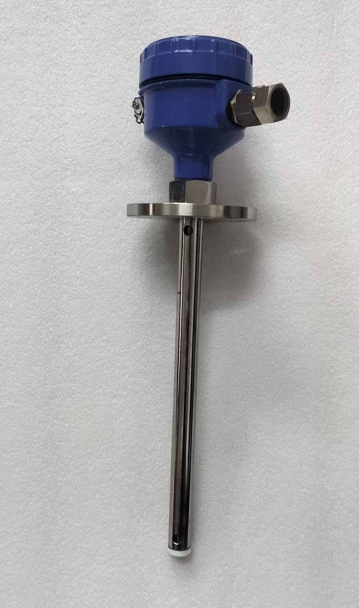
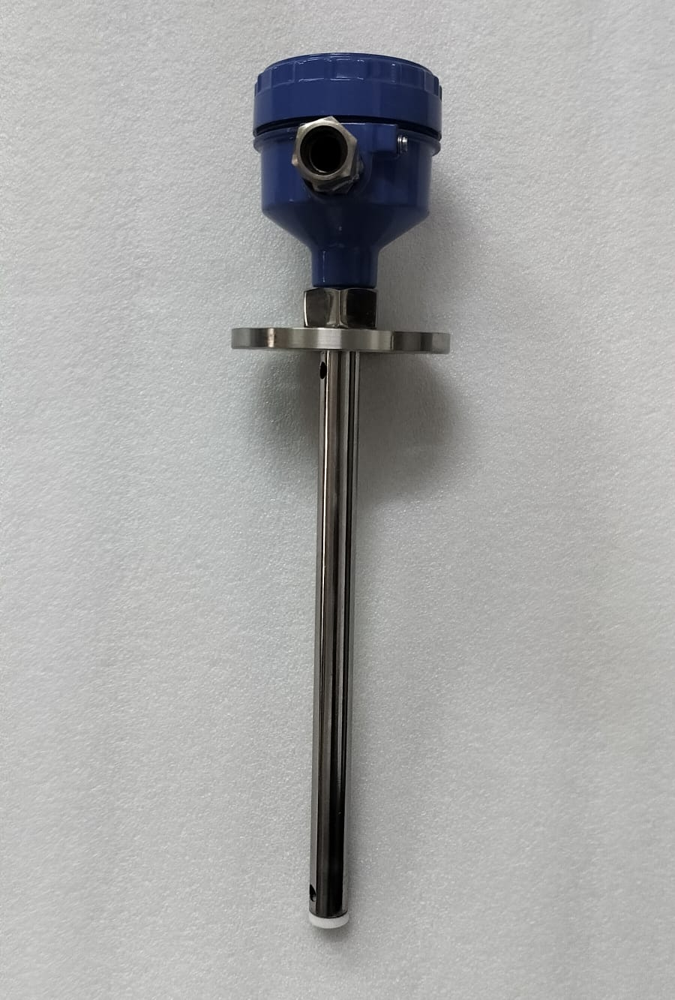
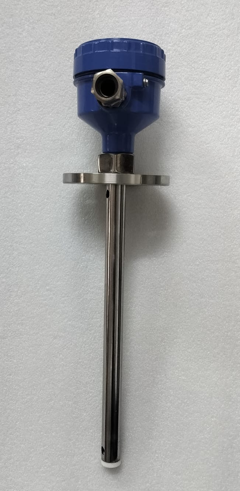
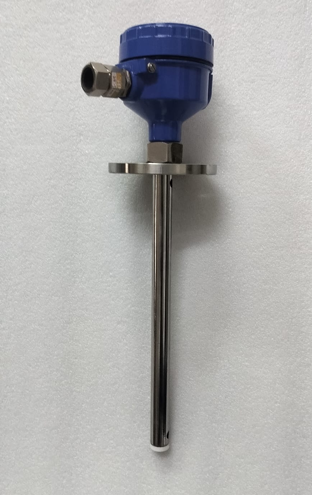

i.style.borderColor='#cbd5e1'); this.style.borderColor='var(--primary-cyan)';" style="width: 60px; height: 60px; object-fit: contain; background: #ffffff; padding: 3px; border-radius: 8px; cursor: pointer; transition: all 0.2s ease; border: 2px solid var(--primary-cyan);">


i.style.borderColor='#cbd5e1'); this.style.borderColor='var(--primary-cyan)';" style="width: 60px; height: 60px; object-fit: contain; background: #ffffff; padding: 3px; border-radius: 8px; cursor: pointer; transition: all 0.2s ease; border: 2px solid #cbd5e1;">
i.style.borderColor='#cbd5e1'); this.style.borderColor='var(--primary-cyan)';" style="width: 60px; height: 60px; object-fit: contain; background: #ffffff; padding: 3px; border-radius: 8px; cursor: pointer; transition: all 0.2s ease; border: 2px solid #cbd5e1;">
i.style.borderColor='#cbd5e1'); this.style.borderColor='var(--primary-cyan)';" style="width: 60px; height: 60px; object-fit: contain; background: #ffffff; padding: 3px; border-radius: 8px; cursor: pointer; transition: all 0.2s ease; border: 2px solid #cbd5e1;">
Made in India
100% Tested & Calibrated
Model: CPLT-1200F
Continuous Fuel Level Transmitter (Diesel, Petrol, Fuels & Solvents)
The CPLT-1200F is a specialized capacitance fuel level transmitter engineered specifically for precision fuel, diesel, petrol, ethanol, and oil level measurement in non-conductive tanks, generator day tanks, storage vessels, and mobile fleets. Featuring an integrated concentric stainless steel grounding tube, it delivers high accuracy (±0.5% FS) regardless of vessel shape or tank material.
Diesel, Petrol, Ethanol & Oils
Concentric Grounding Reference Tube
High Accuracy ±0.5% FS
Flameproof Ex-d IP66 Certified
4-20mA Output & RS485 Modbus